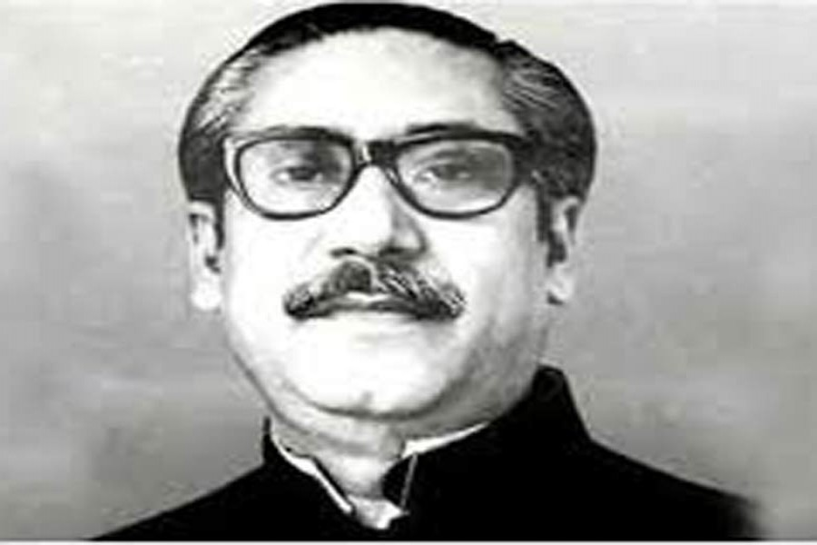

THIS IS A TRIBUTE TO OUR FATHER OF THE NATION BANGABANDHU SHEIKH MUJIBUR RAHMAN.
HIS ASSASSINATION WAS A TERRIBLE LOSS TO US AND OUR COUNTRY.
WE ALL ARE MOURNFULL AT HIS ASSASSINATION...
FATHER OF THE NATION BANGABANDHU SHEIKH MUJIBUR RAHMAN

The Father of the Nation Bangabandhu Sheikh Mujibur Rahman is the architect of
independence of Bangladesh.
Bangabandhu was born on 17 March 1920 in the village Tungipara under the gopalganj district.
His father Sheikh Lutfar Rahman was a serestadar in the civil court of Gopalganj. Sheikh Mujibur Rahman passed his matriculation from Gopalganj Missionary School in
1942, IA (Twelfth Grade) from Islamia College, Calcutta in 1944 and BA from the same College
in 1947. In 1946, Mujib was elected general secretary of the Islamia College Students Union.
He was an activist of the Bengal Provincial Muslim League and a member of the All-India Muslim
League Council from 1943 onwards.
Bangabandhu Sheikh Mujibur Rahman was a founding member of the East Pakistan Muslim Students
League (est. 1948), one of the founding joint secretaries of the East Pakistan Awami Muslim
League (est. 1949), general secretary of the awami league (1953-1966), president of the Awami
League (1966-1974), president of Bangladesh (in absentia from 26 March 1971 to 11 January 1972)
, prime minister of Bangladesh (12 January 1972-24 January 1975), president of Bangladesh (25 January
1975-15 August 1975).
As an activist he had been a supporter of the Suhrawardhy-Hashim faction of the Muslim League.
During the 1946 general elections, the Muslim League selected Mujib for electioneering in
Faridpur district
Sheikh Mujibur Rahman was one of the principal organisers behind the formation of the East
Pakistan Muslim Students League (est. 1948). After partition (1947), he got himself admitted
into the university of dhaka to study law but was unable to complete it, because, he was
expelled from the University in early 1949 on charge of “inciting the fourth-class employees”
in their agitation against the University’s indifference towards their legitimate demands.
Sheikh Mujib’s active political career began with his election to one of the posts of joint
secretaries of the East Pakistan Awami Muslim League (1949). As a political prisoner, he was
then interned in Faridpur jail. In 1953, Sheikh Mujib was elected general secretary of the East
Pakistan Awami Muslim League, a post that he held until 1966 when he became president of the
party. Like his political mentor Huseyn Shaheed Suhrawardy, Mujib also underscored the
importance of party organisation and management. To organise the party, he resigned from the
Cabinet of Ataur rahman khan (1956-1958) and devoted himself to the task of taking the party
to grassroots level. A charismatic organiser, Sheikh Mujib had established his firm control
over the party. He had the mettle to revive the Awami League in spite of the fact that his
political mentor, H.S. Suhrawardy, was in favour of keeping political parties defunct and work
under the political party called National Democratic Front.
Sheikh Mujibur Rahman entered parliamentary politics first in 1954 through his election as a
member of the East Bengal Legislative Assembly on the united front ticket. He was also a member
of the Pakistan Second Constituent Assembly-cum-Legislature (1955-1958).
Sheikh Mujib was a pragmatic politician. In the Pakistan state, he appeared as the undaunted
advocate of the Bengali interests from the start. He was among the first language prisoners.
However, Sheikh Mujibur Rahman grew in political eminence in the early 1960s. Through his
organising ability Mujib was able to salvage the Awami League from a series of defections
and exit of various factions from the mainstream party. He reorganised the Awami League and
put it on a firm foundation. In 1966, he announced his famous six-point programme, calling it
"Our [Bengali's] Charter of Survival", which aimed at self-rule for East Pakistan. Struck sharp
at the roots of West Pakistani dominance, the six-point programme at once drew the attention of
the nation. Though conservative elements of all political parties looked at it with
consternation, it instantaneously stirred the younger generation, particularly the students,
youth and working classes.
Disturbed by the radical political views of Sheikh Mujib, the Ayub regime put him behind bars.
A sedition case, known as agartala conspiracy case, was brought against him. It may be noted
that during most of the period of the Ayub regime Mujib was in jail, first from 1958 to 1961
and then from 1966 to early 1969. During the second term in jail, Mujib’s charisma grew so much
that a mass uprising took place in his favour in early 1969 and Ayub administration was
compelled to release him on 22 February 1969 unconditionally.
On the following day of his release, the Sarbadaliya Chhatra Sangram Parishad (All Parties
Students Action Committee) organised a mass reception to him at ramna racecourse (now,
Suhrawardy Uddyan) and accorded him the title "Bangabandhu" (Friend of the Bengalis).
In him they saw a true leader who suffered jail terms for about twelve years during the 23
years of Pakistani rule. Twelve years in jail and ten years under close surveillance, Pakistan,
to Sheikh Mujib, indeed proved to be more a prison than a free homeland.
The general elections of December 1970 made Bangabandhu Sheikh Mujibur Rahman the sole spokesman
of East Pakistan. The people gave him the absolute mandate in favour of his six-point doctrine.
Now it was his turn to implement it. Mujib was so serious about the six-point that on 3 January
1971, he held a solemn ceremony at Ramna Race Course with all the East Pakistan representatives
and took an oath never to deviate from the six-point idea when framing the constitution for
Pakistan.
Mujib’s most uncompromising stand on the six-point programme led ZA Bhutto and Yahya’s military
junta to take a stringent view. Instead of allowing the Sheikh to form the government, the
junta resolved to undo the results of the elections. President Yahya Khan cancelled
unilaterally the National Assembly meet Dhaka scheduled to be held at on 3 March 1971.
The announcement triggered off the death-knell of Pakistan. Mujib called an all-out
non-cooperation movement in East Pakistan. The whole province supported the non-cooperation
movement. During the course of non-cooperation (2-25 March 1971) the entire civil authorities
in East Pakistan came under the control and directives of Sheikh Mujibur Rahman, himself
becoming the de facto head of government of the province.
During this time, on 7 March Mujib made a historic address at a mammoth gathering at the Race
Course which marked a turning point in the history of the Bengali nation. In his address Mujib
made specific charges against the Martial Law authorities which failed to transfer power to
the elected representatives. At the end of his speech, he made a clarion call, saying: “Build
forts in each homestead. You must resist the Pakistani enemy with whatever you have in hand.
Remember, we have given a lot of blood, a lot more blood we shall give if need be, but we shall
liberate the people of this country, Insha Allah [ie, if God blessed]..The struggle this time
is the struggle for our emancipation; the struggle this time is the struggle for independence.”
Meanwhile, General Yahya Khan and other leaders from West Pakistan came to Dhaka on 15 March to
start a dialogue with Sheikh Mujib and his party. The dialogue began on the following day and
continued intermittently down to 25 March morning. During the period, non-cooperation and
hartals continued relentlessly. Students and leaders of various political parties had been
declaring independence from March 2 and the spree continued down to 25 March. At mid-night
of 25 March 1971, the Pakistan army launched its brutal crackdown in Dhaka. Sheikh Mujib was
arrested and kept confined at Dhaka Cantonment until he was lifted to West Pakistan for facing
trial for sedition and inciting insurrection.
Although during the war of liberation was begun in the wake of the 25 March army crackdown
Bangabandhu had been a prisoner in the hands of Pakistan, he was made, in absentia, the
President of the provisional government, called the mujibnagar government, formed on 10 April
1971 by the people’s representatives to head the Liberation War. He was also made the Supreme
Commander of the Armed Forces. Throughout the period of the War of Liberation, Sheikh Mujib’s
charisma worked as the source of national unity and strength. After the liberation of Bangladesh
on 16 December 1971 from Pakistani occupation, Sheikh Mujibur Rahman was released from Pakistan
jail and via London he arrived in Dhaka on 10 January 1972.
Bangabandhu Sheikh Mujibur Rahman headed the first government of the post-liberation Bangladesh
for a period of three years and a half. Starting from scratch his government had to deal with
the countless problems of a war ravaged country. Restoring law and order, rehabilating the
mukhtijodhas, restoring the ruptured communication system, saving lives of the people hostile
to the War of Liberation from the public wrath, and, most importantly, feeding the hungry
millions and many other problems bedeviled his administration. Because of his charismatic
leadership Bangladesh gained recognition from the international community including the United
Nations.
Bangabandhu Sheikh Mujibur Rahman was assassinated by a group of disgruntled army officials on
August 15, 1975 along with most of his family members excepting for his two daughters who had
been staying abroad at that time. Bangabandhu’s eldest daughter, Sheikh Hasina, is the current
Prime Minister of Bangladesh.Bangabandhu’s assassination was a great loss for bangladesh
(This was a short documentary about BANGABANDHU SHEIKH MUJIBUR RAHMAN.)
This webpage is made by RAYYAN and RAAZIQUE
THANKS A LOT FOR YOUR TIME
WITH THE BEST REGARDS,
RAYYAN HOSSAIN, RAAZIQUE HOSSAIN, RAZEEN HOSSAIN.....